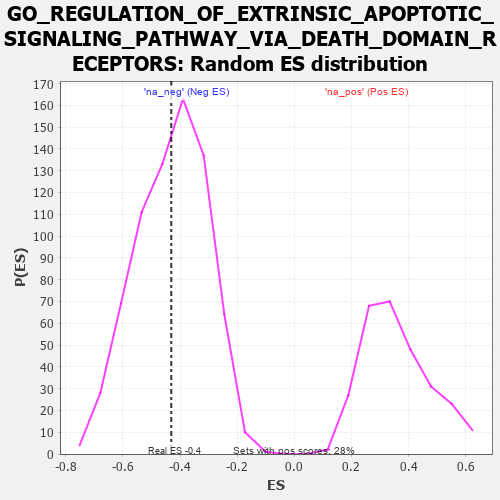

| | | Dataset | 7d |
| Phenotype | NoPhenotypeAvailable |
| Upregulated in class | na_neg |
| GeneSet | GO_REGULATION_OF_EXTRINSIC_APOPTOTIC_SIGNALING_PATHWAY_VIA_DEATH_DOMAIN_RECEPTORS |
| Enrichment Score (ES) | -0.43074682 |
| Normalized Enrichment Score (NES) | -1.0017209 |
| Nominal p-value | 0.475 |
| FDR q-value | 0.87342966 |
| FWER p-Value | 1.0 |
Table: GSEA Results Summary
 Fig 1: Enrichment plot: GO_REGULATION_OF_EXTRINSIC_APOPTOTIC_SIGNALING_PATHWAY_VIA_DEATH_DOMAIN_RECEPTORS
Fig 1: Enrichment plot: GO_REGULATION_OF_EXTRINSIC_APOPTOTIC_SIGNALING_PATHWAY_VIA_DEATH_DOMAIN_RECEPTORS
Profile of the Running ES Score & Positions of GeneSet Members on the Rank Ordered List
| PROBE | GENE SYMBOL | GENE_TITLE | RANK IN GENE LIST | RANK METRIC SCORE | RUNNING ES | CORE ENRICHMENT | | 1 | HGF | | | 276 | 0.870 | 0.0658 | No |
| 2 | HMGB2 | | | 892 | 0.507 | 0.0471 | No |
| 3 | RAF1 | | | 2011 | 0.303 | -0.0584 | No |
| 4 | FAF1 | | | 2340 | 0.255 | -0.0703 | No |
| 5 | GPX1 | | | 3109 | 0.135 | -0.1511 | No |
| 6 | DDX3X | | | 3388 | 0.091 | -0.1756 | No |
| 7 | SFRP2 | | | 4065 | -0.018 | -0.2584 | No |
| 8 | PTEN | | | 5262 | -0.261 | -0.3786 | No |
| 9 | CASP8 | | | 5678 | -0.369 | -0.3881 | Yes |
| 10 | MADD | | | 5686 | -0.371 | -0.3462 | Yes |
| 11 | STK4 | | | 6145 | -0.518 | -0.3439 | Yes |
| 12 | RFFL | | | 6674 | -0.749 | -0.3238 | Yes |
| 13 | GSK3B | | | 6719 | -0.768 | -0.2406 | Yes |
| 14 | RNF34 | | | 7040 | -0.963 | -0.1696 | Yes |
| 15 | TRAF2 | | | 7861 | -2.481 | 0.0138 | Yes |
Table: GSEA details [plain text format]

Fig 2: GO_REGULATION_OF_EXTRINSIC_APOPTOTIC_SIGNALING_PATHWAY_VIA_DEATH_DOMAIN_RECEPTORS: Random ES distribution
Gene set null distribution of ES for GO_REGULATION_OF_EXTRINSIC_APOPTOTIC_SIGNALING_PATHWAY_VIA_DEATH_DOMAIN_RECEPTORS